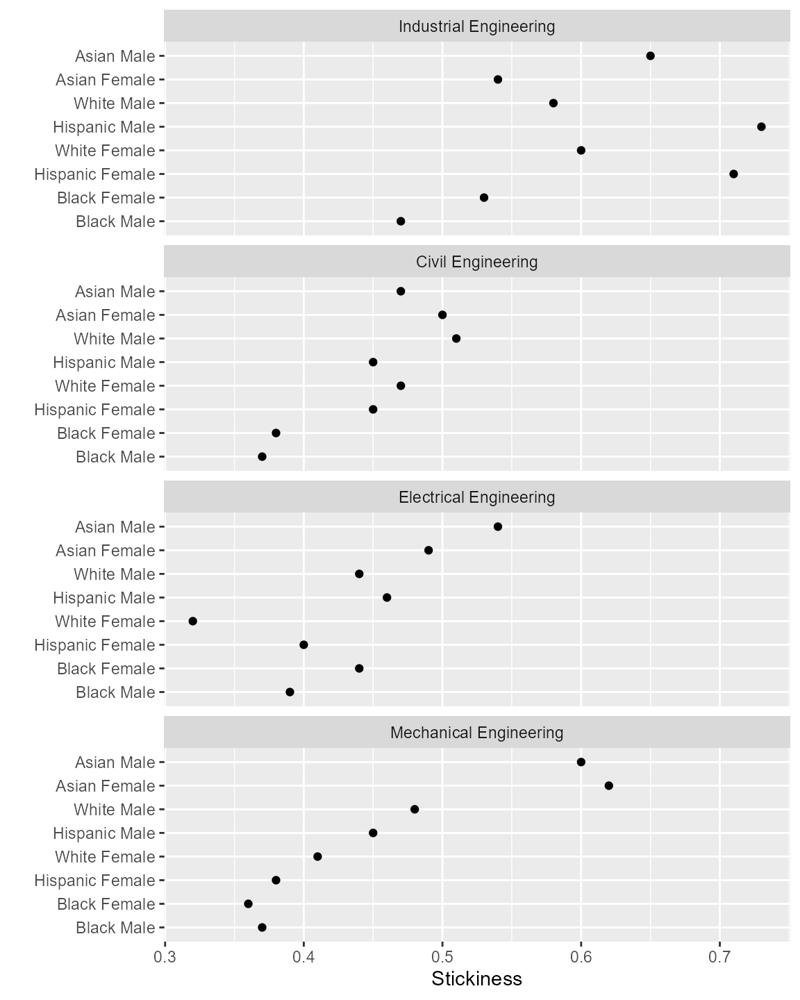
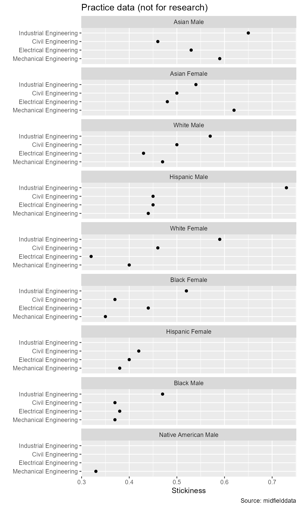

For initial exploration of possible stories in the data, the most common graph design used by the MIDFIELD team is the multiway graph. We examine multiway data here, in this initial tutorial, because as Wickham states (Wickham and Grolemund, 2017),
Visualization is a great place to start with R programming, because the payoff is so clear; you get to make elegant and informative plots that help you understand the data.
Many persistence metrics can be organized as multiway data in which there is is one quantitative variable and two categorical variables. As explained by its inventor (Cleveland, 1993),
… the quantitative variable is a response, and the goal is to study how it depends on the categorical variables, which are factors. What distinguishes multiway data is the cross-classification of the categorical variables; there is a value of the response for each combination of levels of the two categorical variables.
prepare_multiway() is used to transform multiway data such that the two categorical variables are factors with levels ordered by the third, quantitative variable. In this vignette we explore its arguments using a case study in four engineering programs.
In the Stickiness metric vignette (link), we construct the data frame with the numbers of students ever enrolled in the case study programs, the number graduating, and the resulting program stickiness grouped by race/ethnicity, sex, and program. These data are included with midfieldr as the built-in data set rep_stickiness. View its help page by loading midfieldr and running
? rep_stickinessThe data are loaded with midfieldr. We assign it to the “pre-multiway” object pre-mw.
# load stickiness data from case study pre_mw <- copy(rep_stickiness) # examine the result pre_mw #> program race sex ever grad stick #> 1: Civil Engineering Asian Female 22 11 0.50 #> 2: Civil Engineering Asian Male 51 24 0.47 #> 3: Civil Engineering Black Female 56 21 0.38 #> 4: Civil Engineering Black Male 106 39 0.37 #> 5: Civil Engineering Hispanic Female 11 5 0.45 #> 6: Civil Engineering Hispanic Male 66 30 0.45 #> 7: Civil Engineering International Female 1 1 1.00 #> 8: Civil Engineering International Male 14 5 0.36 #> 9: Civil Engineering Native American Male 7 3 0.43 #> 10: Civil Engineering Other Female 6 1 0.17 #> --- #> 54: Mechanical Engineering International Female 3 2 0.67 #> 55: Mechanical Engineering International Male 43 26 0.60 #> 56: Mechanical Engineering Native American Female 5 2 0.40 #> 57: Mechanical Engineering Native American Male 14 5 0.36 #> 58: Mechanical Engineering Other Female 4 2 0.50 #> 59: Mechanical Engineering Other Male 49 28 0.57 #> 60: Mechanical Engineering Unknown Female 5 3 0.60 #> 61: Mechanical Engineering Unknown Male 15 9 0.60 #> 62: Mechanical Engineering White Female 345 141 0.41 #> 63: Mechanical Engineering White Male 2444 1166 0.48
To protect confidentiality and prevent identification of individuals or institutions with small sub-populations, we typically omit rows with a small population. Using the larger MIDFIELD database, we usually set this limit to 10. Here, using the midfielddata sample, we’ll use 5.
# prepare rows rows_we_want <- pre_mw$ever >= 5 pre_mw <- pre_mw[rows_we_want] # examine the result pre_mw #> program race sex ever grad stick #> 1: Civil Engineering Asian Female 22 11 0.50 #> 2: Civil Engineering Asian Male 51 24 0.47 #> 3: Civil Engineering Black Female 56 21 0.38 #> 4: Civil Engineering Black Male 106 39 0.37 #> 5: Civil Engineering Hispanic Female 11 5 0.45 #> 6: Civil Engineering Hispanic Male 66 30 0.45 #> 7: Civil Engineering International Male 14 5 0.36 #> 8: Civil Engineering Native American Male 7 3 0.43 #> 9: Civil Engineering Other Female 6 1 0.17 #> 10: Civil Engineering Other Male 15 8 0.53 #> --- #> 43: Mechanical Engineering Hispanic Female 13 5 0.38 #> 44: Mechanical Engineering Hispanic Male 87 39 0.45 #> 45: Mechanical Engineering International Male 43 26 0.60 #> 46: Mechanical Engineering Native American Female 5 2 0.40 #> 47: Mechanical Engineering Native American Male 14 5 0.36 #> 48: Mechanical Engineering Other Male 49 28 0.57 #> 49: Mechanical Engineering Unknown Female 5 3 0.60 #> 50: Mechanical Engineering Unknown Male 15 9 0.60 #> 51: Mechanical Engineering White Female 345 141 0.41 #> 52: Mechanical Engineering White Male 2444 1166 0.48
We typically delete ambiguous levels of race/ethnicity. And because of its sparse representation in the data, we often omit the Native American population as well.
# remove rows of ambiguous or underrepresented populations rows_we_want <- !pre_mw$race %in% c( "Unknown", "International", "Other", "Native American" ) pre_mw <- pre_mw[rows_we_want] # examine the result unique(pre_mw$race) #> [1] "Asian" "Black" "Hispanic" "White"
We combine the race/ethnicity and sex column to create one of the multiway categorical variables.
# begin transformation to multiway form data_mw <- copy(pre_mw) # create a new combined framing variable data_mw[, race_sex := paste(race, sex, sep = " ")] # examine the result data_mw #> program race sex ever grad stick race_sex #> 1: Civil Engineering Asian Female 22 11 0.50 Asian Female #> 2: Civil Engineering Asian Male 51 24 0.47 Asian Male #> 3: Civil Engineering Black Female 56 21 0.38 Black Female #> 4: Civil Engineering Black Male 106 39 0.37 Black Male #> 5: Civil Engineering Hispanic Female 11 5 0.45 Hispanic Female #> 6: Civil Engineering Hispanic Male 66 30 0.45 Hispanic Male #> 7: Civil Engineering White Female 407 192 0.47 White Female #> 8: Civil Engineering White Male 1376 708 0.51 White Male #> 9: Electrical Engineering Asian Female 45 22 0.49 Asian Female #> 10: Electrical Engineering Asian Male 222 120 0.54 Asian Male #> --- #> 23: Industrial Engineering White Female 286 172 0.60 White Female #> 24: Industrial Engineering White Male 611 354 0.58 White Male #> 25: Mechanical Engineering Asian Female 24 15 0.62 Asian Female #> 26: Mechanical Engineering Asian Male 136 82 0.60 Asian Male #> 27: Mechanical Engineering Black Female 94 34 0.36 Black Female #> 28: Mechanical Engineering Black Male 237 87 0.37 Black Male #> 29: Mechanical Engineering Hispanic Female 13 5 0.38 Hispanic Female #> 30: Mechanical Engineering Hispanic Male 87 39 0.45 Hispanic Male #> 31: Mechanical Engineering White Female 345 141 0.41 White Female #> 32: Mechanical Engineering White Male 2444 1166 0.48 White Male
To complete the transformation to multiway form, we select the three multiway variables.
# select the multiway variables cols_we_want <- c("program", "race_sex", "stick") data_mw <- data_mw[, ..cols_we_want] # examine the result data_mw #> program race_sex stick #> 1: Civil Engineering Asian Female 0.50 #> 2: Civil Engineering Asian Male 0.47 #> 3: Civil Engineering Black Female 0.38 #> 4: Civil Engineering Black Male 0.37 #> 5: Civil Engineering Hispanic Female 0.45 #> 6: Civil Engineering Hispanic Male 0.45 #> 7: Civil Engineering White Female 0.47 #> 8: Civil Engineering White Male 0.51 #> 9: Electrical Engineering Asian Female 0.49 #> 10: Electrical Engineering Asian Male 0.54 #> --- #> 23: Industrial Engineering White Female 0.60 #> 24: Industrial Engineering White Male 0.58 #> 25: Mechanical Engineering Asian Female 0.62 #> 26: Mechanical Engineering Asian Male 0.60 #> 27: Mechanical Engineering Black Female 0.36 #> 28: Mechanical Engineering Black Male 0.37 #> 29: Mechanical Engineering Hispanic Female 0.38 #> 30: Mechanical Engineering Hispanic Male 0.45 #> 31: Mechanical Engineering White Female 0.41 #> 32: Mechanical Engineering White Male 0.48
Then we use prepare_multiway() to convert the character columns to factors ordered by the median stickiness.
# transform characters to factors ordered by median stickiness data_mw <- prepare_multiway(data_mw) # examine the result data_mw #> program race_sex stick #> 1: Civil Engineering Asian Female 0.50 #> 2: Civil Engineering Asian Male 0.47 #> 3: Civil Engineering Black Female 0.38 #> 4: Civil Engineering Black Male 0.37 #> 5: Civil Engineering Hispanic Female 0.45 #> 6: Civil Engineering Hispanic Male 0.45 #> 7: Civil Engineering White Female 0.47 #> 8: Civil Engineering White Male 0.51 #> 9: Electrical Engineering Asian Female 0.49 #> 10: Electrical Engineering Asian Male 0.54 #> --- #> 23: Industrial Engineering White Female 0.60 #> 24: Industrial Engineering White Male 0.58 #> 25: Mechanical Engineering Asian Female 0.62 #> 26: Mechanical Engineering Asian Male 0.60 #> 27: Mechanical Engineering Black Female 0.36 #> 28: Mechanical Engineering Black Male 0.37 #> 29: Mechanical Engineering Hispanic Female 0.38 #> 30: Mechanical Engineering Hispanic Male 0.45 #> 31: Mechanical Engineering White Female 0.41 #> 32: Mechanical Engineering White Male 0.48
The multiway data derived above is the data set rep_stickiness_mw in midfieldr. View its help page by running
? rep_stickiness_mwWe use conventional ggplot2 functions to create the multiway graphs. By previously ordering the levels of the factors, we have structured the data so that the rows and panels of the multiway graph are ordered by the appropriate medians.
# create one multiway graph ggplot(data = data_mw, aes(x = stick, y = race_sex)) + facet_wrap(vars(program), ncol = 1, as.table = FALSE) + geom_point(na.rm = TRUE) + labs(x = "Stickiness", y = "")

This graph permits a direct visual comparison of how stickiness varies by race and sex within a particular major.
Reading a multiway graph
The previous graph does not facilitate visual comparisons of members of the same race-sex group. As Cleveland says,
Because of this asymmetry, it is often important to explore multiway data by as many multiway dot plots as there are categorical variables, with each variable assigned once to the levels.
To create the dual multiway graph, we swap the roles of the rows and panels.
y = race_sex becomes y = program
facet_wrap(vars(program) ... becomes facet_wrap(vars(race_sex) ...
# create the dual multiway graph ggplot(data = data_mw, aes(x = stick, y = program)) + facet_wrap(vars(race_sex), ncol = 1, as.table = FALSE) + geom_point(na.rm = TRUE) + labs(x = "Stickiness", y = "")

This graph permits a direct visual comparison of how stickiness varies by major for one group of students.
Both multiways should be created for discussion. Usually one or the other will convey a more compelling visual story that gets included in the published findings.
Data tables are useful in discussions with one’s research team and are often included in publications for editors or reviewers who want to see the values underlying the data graphics. The first thing to do before tabulating is to limit the significant figures of floating-point numbers.
# tabulate data in block record ("long") form blockf <- copy(data_mw) # limit significant digits blockf[, stick := round(stick, 2)] # examine the result blockf
These data are laid out in “block record” form (Mount and Zumel, 2019), where the race_sex key and the program key are both in columns and the finding is in the last column. This layout is also called “tidy data” (Wickham and Grolemund, 2017).
The graphing package we use, ggplot2, is designed to work most effectively with block-record data, thus the block-record (“long”) form is the default layout in midfieldr.
| program | race_sex | stick |
|---|---|---|
| Civil Engineering | Asian Female | 0.50 |
| Civil Engineering | Asian Male | 0.47 |
| Civil Engineering | Black Female | 0.38 |
| Civil Engineering | Black Male | 0.37 |
| Civil Engineering | Hispanic Female | 0.45 |
| Civil Engineering | Hispanic Male | 0.45 |
| Civil Engineering | White Female | 0.47 |
| Civil Engineering | White Male | 0.51 |
| Electrical Engineering | Asian Female | 0.49 |
| Electrical Engineering | Asian Male | 0.54 |
| Electrical Engineering | Black Female | 0.44 |
| Electrical Engineering | Black Male | 0.39 |
| Electrical Engineering | Hispanic Female | 0.40 |
| Electrical Engineering | Hispanic Male | 0.46 |
| Electrical Engineering | White Female | 0.32 |
| Electrical Engineering | White Male | 0.44 |
| Industrial Engineering | Asian Female | 0.54 |
| Industrial Engineering | Asian Male | 0.65 |
| Industrial Engineering | Black Female | 0.53 |
| Industrial Engineering | Black Male | 0.47 |
| Industrial Engineering | Hispanic Female | 0.71 |
| Industrial Engineering | Hispanic Male | 0.73 |
| Industrial Engineering | White Female | 0.60 |
| Industrial Engineering | White Male | 0.58 |
| Mechanical Engineering | Asian Female | 0.62 |
| Mechanical Engineering | Asian Male | 0.60 |
| Mechanical Engineering | Black Female | 0.36 |
| Mechanical Engineering | Black Male | 0.37 |
| Mechanical Engineering | Hispanic Female | 0.38 |
| Mechanical Engineering | Hispanic Male | 0.45 |
| Mechanical Engineering | White Female | 0.41 |
| Mechanical Engineering | White Male | 0.48 |
However, the visual convention preferred by publishers and readers is a row-record (“wide”) form, as illustrated by Table 2. The race_sex key is in the left column and the program key is in the column names. The stickiness findings lie at the row-column intersections.
| Race/ethnicity/sex | Civil | Electrical | Industrial | Mechanical |
|---|---|---|---|---|
| Asian Female | 0.50 | 0.49 | 0.54 | 0.62 |
| Asian Male | 0.47 | 0.54 | 0.65 | 0.60 |
| Black Female | 0.38 | 0.44 | 0.53 | 0.36 |
| Black Male | 0.37 | 0.39 | 0.47 | 0.37 |
| Hispanic Female | 0.45 | 0.40 | 0.71 | 0.38 |
| Hispanic Male | 0.45 | 0.46 | 0.73 | 0.45 |
| White Female | 0.47 | 0.32 | 0.60 | 0.41 |
| White Male | 0.51 | 0.44 | 0.58 | 0.48 |
Depending on your software background, you may have encountered a block-record/row-record transformation using any of these function pairs—a list adapted from (Mount and Zumel, 2019).
Before reshaping, we convert factors to characters so that the rows and columns are in alphabetical order after reshaping.
# convert factors to characters temp <- copy(blockf) temp <- temp[, race_sex := as.character(race_sex)] temp <- temp[, program := as.character(program)]
dcast() is used here to reshape the data frame from block-record form to row-record form.
# reshape rowf <- dcast(temp, race_sex ~ program, value.var = "stick")
Lastly, we shorten the new column names. The result is the source for Table 2 above.
# shorten column names names(rowf) <- gsub("engineering", "", names(rowf), ignore.case = TRUE) # remove white space names(rowf) <- gsub(" ", "", names(rowf)) # edit the first column name names(rowf) <- gsub("race_sex", "Race/ethnicity/sex", names(rowf), ignore.case = TRUE ) # examine the result rowf #> Race/ethnicity/sex Civil Electrical Industrial Mechanical #> 1: Asian Female 0.50 0.49 0.54 0.62 #> 2: Asian Male 0.47 0.54 0.65 0.60 #> 3: Black Female 0.38 0.44 0.53 0.36 #> 4: Black Male 0.37 0.39 0.47 0.37 #> 5: Hispanic Female 0.45 0.40 0.71 0.38 #> 6: Hispanic Male 0.45 0.46 0.73 0.45 #> 7: White Female 0.47 0.32 0.60 0.41 #> 8: White Male 0.51 0.44 0.58 0.48
Other good tools for reshaping are provided in packages such as cdata (Mount and Zumel, 2020) and tidyr (Wickham and Henry, 2020). Base R provides the reshape() function but the arguments in dcast() seem easier to understand in this instance.
Cleveland, William S. (1993) Visualizing Data. Summit, NJ: Hobart Press.
Mount, John and Zumel, Nina (2019) Coordinatized data: A fluid data specification. Win Vector LLC. Available at: http://winvector.github.io/FluidData/RowsAndColumns.html.
Mount, John and Zumel, Nina (2020) cdata: Fluid Data Transformations. R package version 1.1.6. Available at: https://CRAN.R-project.org/package=cdata.
Wickham, Hadley and Grolemund, Garrett (2017) R for Data Science. Sebastopol, CA: O’Reilly Media, Inc. Available at: https://r4ds.had.co.nz/.
Wickham, Hadley and Henry, Lionel (2020) tidyr: Tidy Messy Data. R package version 1.1.0. Available at: https://CRAN.R-project.org/package=tidyr.
The vignette code chunks are collected below in a single, condensed script.
# packages used library(midfieldr) library(data.table) library(ggplot2) # load stickiness data from case study pre_mw <- copy(rep_stickiness) # prepare rows rows_we_want <- pre_mw$ever >= 5 pre_mw <- pre_mw[rows_we_want] rows_we_want <- !pre_mw$race %in% c( "Unknown", "International", "Other", "Native American" ) pre_mw <- pre_mw[rows_we_want] # complete the transformation to multiway form data_mw <- copy(pre_mw) data_mw[, race_sex := paste(race, sex, sep = " ")] cols_we_want <- c("program", "race_sex", "stick") data_mw <- data_mw[, ..cols_we_want] # transform characters to factors ordered by median stickiness data_mw <- prepare_multiway(data_mw) # create one multiway graph ggplot(data = data_mw, aes(x = stick, y = race_sex)) + facet_wrap(vars(program), ncol = 1, as.table = FALSE) + geom_point(na.rm = TRUE) + labs(x = "Stickiness", y = "") # create the dual multiway graph ggplot(data = data_mw, aes(x = stick, y = program)) + facet_wrap(vars(race_sex), ncol = 1, as.table = FALSE) + geom_point(na.rm = TRUE) + labs(x = "Stickiness", y = "") # tabulate data in block record ("long") form blockf <- copy(data_mw) blockf[, stick := round(stick, 2)] blockf # tabulate data in row record ("wide") form temp <- copy(blockf) temp <- temp[, race_sex := as.character(race_sex)] temp <- temp[, program := as.character(program)] rowf <- dcast(temp, race_sex ~ program, value.var = "stick") names(rowf) <- gsub("engineering", "", names(rowf), ignore.case = TRUE) names(rowf) <- gsub(" ", "", names(rowf)) names(rowf) <- gsub("race_sex", "Race/ethnicity/sex", names(rowf), ignore.case = TRUE )